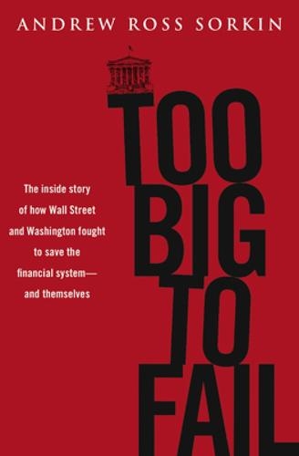

Library › Money & Finance
Too Big to Fail: The Inside Story of How Wall Street and Washington Fought to Save the Financial System — Summary & Key Lessons

The twelve weeks that almost ended modern finance, told minute by minute from the rooms where they saved it (or didn't).
📖 OPEN THE FULL INTERACTIVE BREAKDOWN →🌐 Read it in Hindi, Hinglish, Gujarati, Tamil & 22 more languages — free, with audio.
💡 The Big Idea
Too Big to Fail is the definitive tick-tock of 2008's fatal months: Bear Stearns' forced marriage to JPMorgan (March), the summer of denial, the Fannie-Freddie conservatorship (September 5), the catastrophic Lehman weekend (September 12-14, Barclays blocked, Bank of America defecting to Merrill), AIG's $85 billion rescue (September 16), WaMu's seizure, Morgan Stanley and Goldman's terror, and the TARP saga (voted down September 29, markets convulsing, passed October 3). Through hundreds of interviews, Sorkin reconstructs the decisions, the personal dynamics (Paulson's Goldman history, Geithner-Fuld friction, Dimon's leverage, Buffett's midnight term sheets) and the ideology cracking in real time. The book's contribution: making visible that the system's survival came down to a few exhausted humans improvising, and that 'too big to fail' was not a policy but a discovery, made one weekend at a time.
🧠 The 8 Key Lessons
Lesson 1: In a Crisis, Speed Beats Elegance
The Lehman Weekend
The September weekend's tragedy was partly procedural: potential buyers (Barclays, BofA) needed time, guarantees and regulatory comfort that arrived too late or in the wrong form. Decisions that would take months of process were compressed into 48 hours by exhausted men on conference calls. The crisis lesson for any organization: pre-build your crisis infrastructure (data rooms, decision authority, who can commit capital at 3 a.m.) while healthy, because elegance is the first casualty of a run.
📖 Example: Barclays' Lehman purchase died on a UK regulator's demand for a guarantee the Fed wouldn't give, after BofA had already defected to Merrill: two deals lost to hours and hesitations, not valuations. Read the full example →
⚡ Do this: Build your crisis data room and pre-authorize your 3 a.m. decision-makers this quarter. Write down who can commit what, to whom, on which conditions. The weekend always arrives early.
Lesson 2: Confidence Is the Collateral: Guard the Narrative
Fannie, Freddie and the Silver Bullet That Wasn't
Treasury's March 'bazooka' (blanket authority to back Fannie/Freddie) was meant to reassure markets; instead it signaled vulnerability, and both firms collapsed within months. The lesson: in confidence-based systems, half-measures read as weakness, and announcements are positions. If you must reassure, over-provision and under-promise drama; a guarantee that admits fear is a withdrawal slip.
📖 Example: Markets parsed the bazooka's language like traders: if Treasury prepared unlimited authority, things must be worse than said, so the run accelerated rather than stopped. Read the full example →
⚡ Do this: Before any reassuring announcement, war-game how it reads to a hostile interpreter. If the honest reading is 'they're worried', either strengthen the message or stay silent until you can.
Lesson 3: Letting One Fail to Teach a Lesson Can Kill the Class
The Lehman Decision
The decision to let Lehman fail (no public money, moral hazard discipline after Bear) was ideologically coherent and systemically catastrophic: the bankruptcy froze money markets (the Reserve Primary Fund 'broke the buck'), which forced the AIG rescue within 48 hours at vastly larger scale. The governance lesson: teach lessons on institutions small enough to absorb the corpse; using a systemic node as a classroom converts pedagogy into contagion. If you must make an example, know your system's load-bearing walls first.
📖 Example: The Monday after Lehman, a money-market fund that held Lehman paper broke the buck, industrial companies' commercial paper dried up overnight, and the crisis jumped from Wall Street to Main Street in a week. Read the full example →
⚡ Do this: Map your dependencies: which single counterparty, supplier or platform, if it died this weekend, would kill you in seven days? Reduce that exposure now; contagion doesn't respect your contract terms.
Lesson 4: Rescue Prices Are Set by Desperation, Not Valuation
AIG at $85 Billion (and 79.9 Percent)
AIG's rescue terms (79.9 percent equity, punishing rates) were set in a weekend by a government needing certainty and a company with none; later restructuring softened them as panic ebbed, proving the terms priced fear, not assets. The negotiation lesson: your bargaining power in distress equals your alternative options times your remaining hours. Anything you might need in a crisis (credit lines, insurance, successor buyers) must be negotiated while you still have a Tuesday.
📖 Example: The same AIG assets that justified $85 billion in panic terms were worth multiples more within a year; the difference was time, not fundamentals. Read the full example →
⚡ Do this: List your three most likely crisis needs (liquidity, bridge buyer, key insurance). For each, secure or at least scope the standing arrangement this quarter, while your phone still gets answered.
Lesson 5: Coalitions Collapse When Blame Is Distributed
The Failed House Vote
TARP failed its first House vote (September 29, markets down 778 points) because every constituency's blame was someone else's fault: bankers resented caps, conservatives resented socialism, members faced elections. The deal passed days later only after visible market pain realigned incentives. The coalition lesson: in collective-action crises, the cost of participation must be made lower than the cost of failure, FAST, and that usually requires someone absorbing blame to buy speed.
📖 Example: The phone-market's single-day crash did what leadership couldn't: it made 'no' expensive enough that the same bill passed with changed votes, the grim arithmetic of systemic rescue. Read the full example →
⚡ Do this: If your project needs a coalition (board, partners, family offices), map each member's blame exposure and build cover (shared credit, public framing) BEFORE the vote, not after the failure.
Lesson 6: Personal History Is a Negotiating Variable
Paulson's Goldman Shadow
Every decision carried personal history: Paulson (ex-Goldman CEO) structuring rescues that touched his former firm raised conflict questions that shaped optics and delays; Fuld's decade of feuds closed doors; Dimon's clean balance sheet bought JPMorgan the pick of carcasses. The lesson: in high-stakes deals, your relationships and perceived conflicts are terms of art, disclose and structure around them early, because the appearance of conflict can cost real money.
📖 Example: The Goldman-related optics haunted TARP's sales pitch to Congress and the public, forcing extra governance (comp caps, warrants) that pure economics wouldn't have required. Read the full example →
⚡ Do this: Before your next big negotiation, write your own conflict map (past employers, allies, investors) and design disclosures or recusals into the structure on day one.
Lesson 7: The System's Real Balance Sheet Is Trust Between a Dozen People
The Secret Club at the Top
Beneath institutions, the crisis ran on personal calls: Paulson-Bernanke-Geithner-Dimon-Mack-Schwarzman trust lines decided billions in hours. The uncomfortable truth: systemic stability is interpersonal at the top, and leaders who invest in those relationships in peacetime (honesty in small deals, no surprise disclosures) hold emergency liquidity no contract provides. Build your crisis phone tree in sunny weather.
📖 Example: Deals moved on handshakes between people with decades of history (and broke between people with feuds); the system's operating system, it turned out, was a phone contact list. Read the full example →
⚡ Do this: Identify the five relationships your enterprise would call at 3 a.m. Invest in two of them this month with no agenda: candor on small matters is the deposit that funds crisis withdrawals.
Lesson 8: Write the Autopsy While It's Bleeding
The Book Itself
Sorkin compiled this tick-tock within a year of events, while memories were raw and participants needed their versions heard. The result preserves decision logic (right and wrong) that official histories later flattened. The lesson for your organization: capture the crisis narrative in the first weeks (who decided what, why, with what information), because the retrospective version will serve survivors' interests, not yours. Your crisis archive is a strategic asset.
📖 Example: Participants' candid on-record moments (Fuld's fury, Paulson's doubts) survived precisely because the book was written before narratives hardened into memoirs. Read the full example →
⚡ Do this: After your next crisis (any size), schedule a written within-30-days post-mortem: decisions, information available at the time, alternatives considered. File it where successors will actually find it.
✅ 5-Step Action Plan
- Pre-build crisis infrastructure: data room, 3 a.m. authorities, who-commits-what.
- War-game every reassuring announcement through a hostile interpreter first.
- Reduce exposure to any single counterparty that could kill you in seven days.
- Pre-negotiate your three likely crisis needs while your phone still gets answered.
- Write the crisis post-mortem within 30 days; file it where successors look.
⚠️ When This Doesn't Work
Sorkin reconstructs from hundreds of interviews; dialogue is reconstructed, some participants disputed scenes and emphasis, and the book centers US decision-makers (European angles, and the crisis's full global ledger, are thinner). Hindsight of later literature (QE scale, the bailouts' eventual profit for Treasury) doesn't erase the genuine terror of these weeks. Read it as narrative nonfiction of the highest order, and remember: every room it depicts was improvising.
💀 The Graveyard Proves It
🏛️ Lehman Brothers — 158 Years Old, Leveraged 31:1, Dead in a Weekend. Burn: $600B+ — largest bankruptcy ever. Read the full case study →
💬 Best Quotes from Too Big to Fail: The Inside Story of How Wall Street and Washington Fought to Save the Financial System
- “We're going to have to decide in the next 24 hours what the world looks like on Monday.”
- “There are no atheists in a foxhole and no free marketers in a bank run.”
- “The failure of one institution can now take down the system: that was never supposed to be possible.”
Interactive version: mark lessons as read, listen in your language, share quote cards.